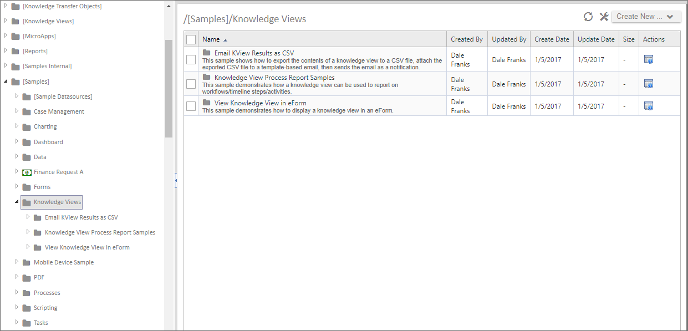
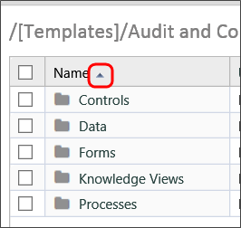
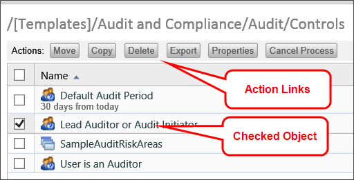
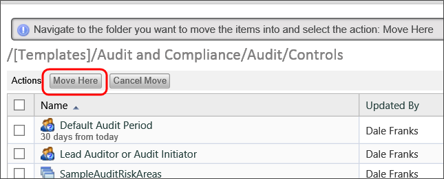
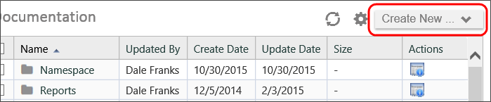
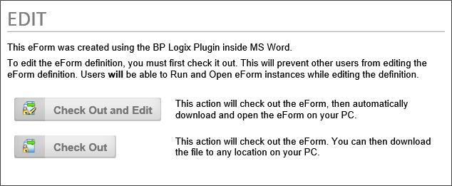
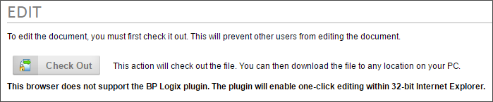

Organizing Content List Objects
In general, Content List objects are sorted into folders, much like files in your computer's file system. There is no hard and fast method of organizing the folders, except that folders and subfolders should be organized logically. For instance, one possible method of organizing folders is shown below.

In this particular organization scheme, you can see that the [Samples] folder on the left side of the screen contains subfolders for different Process Director Objects. In the Knowledge Views folder, you can see the folders are further subdivided into three sample application folders. The Knowledge Views folder is selected, so the Content List on the right side of the example shows all three of the objects in the selected folder. These three folders—though not shown on this example—might further be subdivided into folders named Forms, Processes, Knowledge Views, etc., into which the appropriate Process Director objects would be placed.
You do not, of course, have to copy this particular method of organization, but you should, as a best practice, define some standard method of organizing your Content List so that all implementers are familiar with how an application should be organized. Another general rule of organization—and implementation in general—is that you should use the fewest number of objects necessary to model and automate your processes.
The Content List of the right side of the screen is sortable by column. To sort the items displayed in the Content List, click on the column name. To change the sort from ascending to descending, click on the column name a second time. A small arrow icon will appear next to the column name to show whether you are sorting the column in ascending or descending order.

Each time you click on the column header, the sorting function will occur automatically.
Managing Objects #
On the left side of each object in the Content List is a check box that can be checked to select one or more objects. When you check one or more of these check boxes, a series of Action Links will appear at the top of the Content List that enable you to copy, move, etc. the checked objects.

The following action links are available.
Move
Clicking the Move button will enable you to move the object, along with its complete configuration, to another location in the Content List. When you click the Move button, a new set of action buttons will appear.

Simply navigate to the folder into which you'd like to place the object and click the Move Here button to place the moved object into the desired location. Process Director will move the object from its original location to the new location you have selected. You can cancel the move at any time by clicking the Cancel Move button.
Copy
Clicking the Copy button will copy the basic object definition but not any of the configured custom task event mappings. Just as with the Move button, clicking the Copy button will cause process Director to present you with a new set of action buttons.
Simply navigate to the folder into which you'd like to place the object and click the Copy Here button to place the copied object into the desired location. Process Director will copy the object from its original location and place the copy in the new location you have selected, while leaving the original copy in its place. You can cancel the copy at any time by clicking the Cancel Copy button.
Delete
When you click the Delete button, a confirmation dialog box will be displayed to enable you to confirm that you wish to delete the object. Clicking the OK button on the confirmation dialog box will immediately delete the object.
 When you delete a definition object, like a Form or Process Timeline definition, all of the instances of that object will also be completely removed from the system. There is no undo action for deletions!
When you delete a definition object, like a Form or Process Timeline definition, all of the instances of that object will also be completely removed from the system. There is no undo action for deletions!
Export
Clicking the Export button will start the process of exporting the content object. If you have selected a folder to export, all of the folder's contents will be exported, and the folder/subfolder hierarchy will be exported exactly as it appears in the Content List. See the Importing/Exporting Objects topic for more information about this process.
Properties
Clicking this button will open the properties screen for the selected object. This option will only appear if a single item is selected in the Content List.
Run
Clicking this button will run the object, i.e., will open a Form for editing, or start a process. This option will only appear if a single item is selected in the Content List, and will start a specific action, depending on the object type, as shown below.
|
Form Definition
|
Open a new instance of that form.
|
|
Process Definition
|
Launch a new instance of that process
|
|
Knowledge View, Dashboard, etc.
|
Opens the object in display mode.
|
Cancel Process
Clicking this button will cancel a running process.
Creating Folders #
Folders provide a hierarchical structure to content in the database. The system supports folders and sub-folders. Each folder can contain any number of objects or sub-folders. A folder can have any name and may contain an optional description. Folders provide the organizational foundation for your data. They can be used to group related items according to Process Timelines, or structured according to user roles.
To create a new folder, use theCreate New dropdown in the Content List and choose the Folder menu item. A user must have Modify permission to the parent folder to create a folder. If a user doesn't have the appropriate permission, the dropdown won't appear.

Managing Documents #
Process Director securely stores your documents and files. As an electronic document management system (EDMS), it can store any type of document or file in their native formats. Any file type can be uploaded and managed by the server, including file types such as .PDF, .TXT, .GIF, .JPG, .DOC, .DOCX, .XLS, .XLSX, .PPT, .PPTX, .BMP, .PNG, .ICO, .EPS, .AI, and .TIFF to name a few. Process Director can convert documents or files to a PDF or HTML format; while still maintaining the native file format in the database. Process Director doesn't provide the document authoring tools; instead it utilizes the native authoring tools you are currently using to create and view your files. The type of document can be viewed by clicking on the item in the Content List. The native viewer for the specific document type will be used.
Uploading Documents #
Documents are added to Process Director database by uploading them from your computer. To add a new document, navigate to the appropriate folder on Process Director where the document should be added. Select the Create New dropdown and choose the Document/File entry. A user must have Modify permission to the parent folder to add the new document. If a user doesn't have the appropriate permission, the Create New dropdown item won't appear.
Uploading With the BP Logix Plug-in [Legacy Information]
The BP Logix Plugin uses Microsoft's ActiveX technology with Internet Explorer. ActiveX technology has been deprecated by Microsoft, and Microsoft is phasing out support for Internet Explorer, with Windows 10 targeting 15 June, 2022 as the phase-out date for that operating system. Additionally, ActiveX can't be used with any 64-bit version of Microsoft Office, or recent versions of Office 365. Information about the BP Logix plug-in, therefore, is largely provided for operators of legacy systems that don't use Microsoft products released after 2019, or any 64-bit product.
The BP Logix Plug-in makes the process of uploading and/or creating documents easier. When uploading a document with the BP Logix Plug-in installed, a button labeled Check Out and Edit will display which will open the editor associated with that file.

Uploading Without the Plug-in
The BP Logix Plug-in is not required to upload documents. You will notice on the following screen that the Check Out and Edit button is not displayed. This will happen when adding a new document without the BP Logix plug-in.

Searching For Content #
Process Director supports the ability for users to search through the entire database for any object type using a Knowledge View. The list of objects returned that match the search request will be limited to only those for which the user has View permission.
Searches may be case-sensitive. This is determined by the back-end database system you use. If you are using SQL Server, the default is case-insensitive. If you are using Oracle, the default is case-sensitive.
There is an optional search feature called FTS (full-text search). This feature enables users to search the actual contents of a document for the existence of a word. This support requires SQL Server with FTS enabled. For information on how to enable the full-text indexing on SQL Server, please refer to the Full-Text Search topic in the Administrator's Guide.
Controlling Who Can Create Content #
Process Director enables you to control a user’s permission to create content in a folder. Administrators can use permissions to determine what type of objects or content can be created by users. You may only want certain types of users to be able to create objects like Process Timeline and Form definitions. See the Permissions topic for detailed information on how to set permissions.